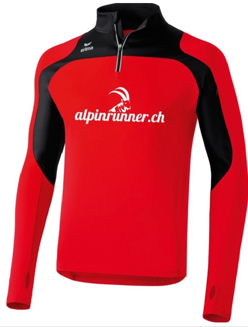
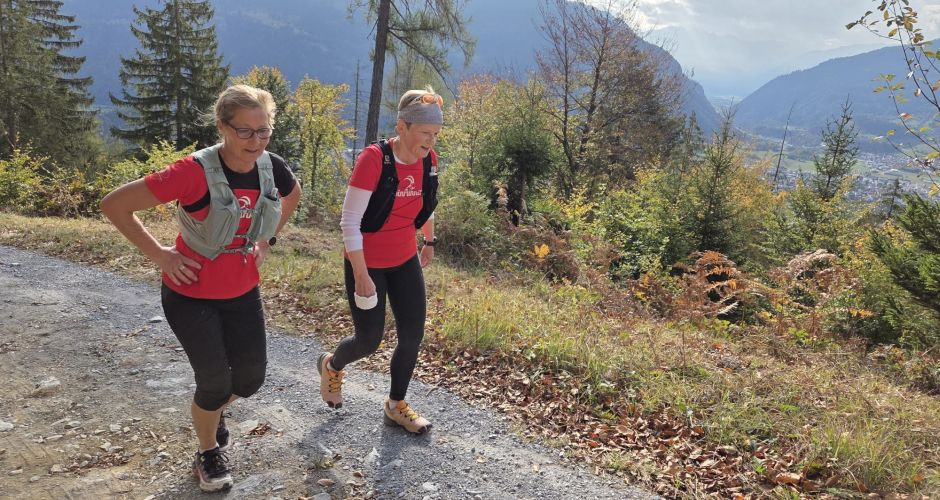
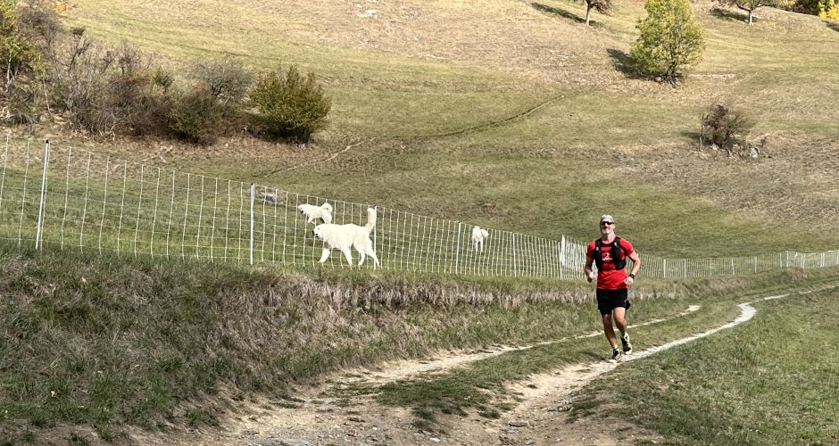
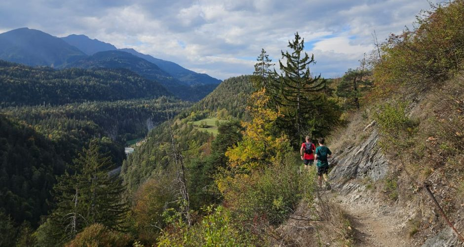
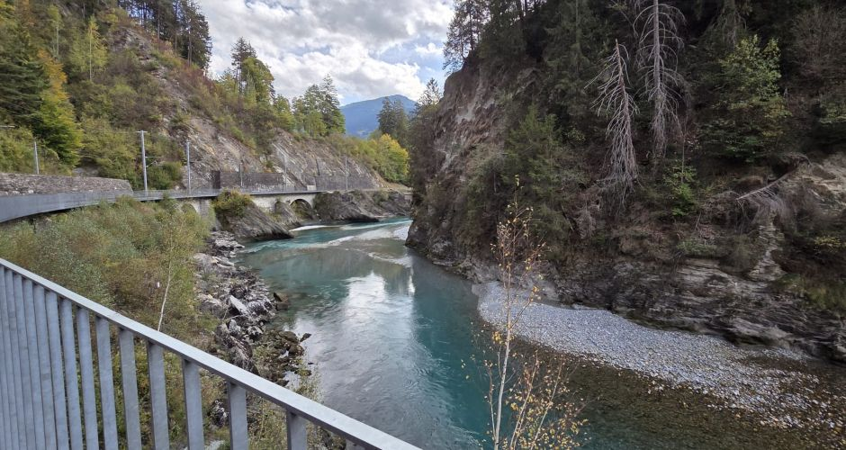
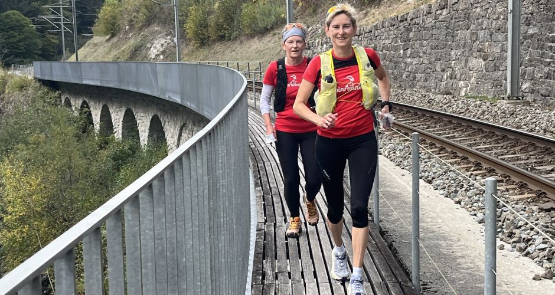
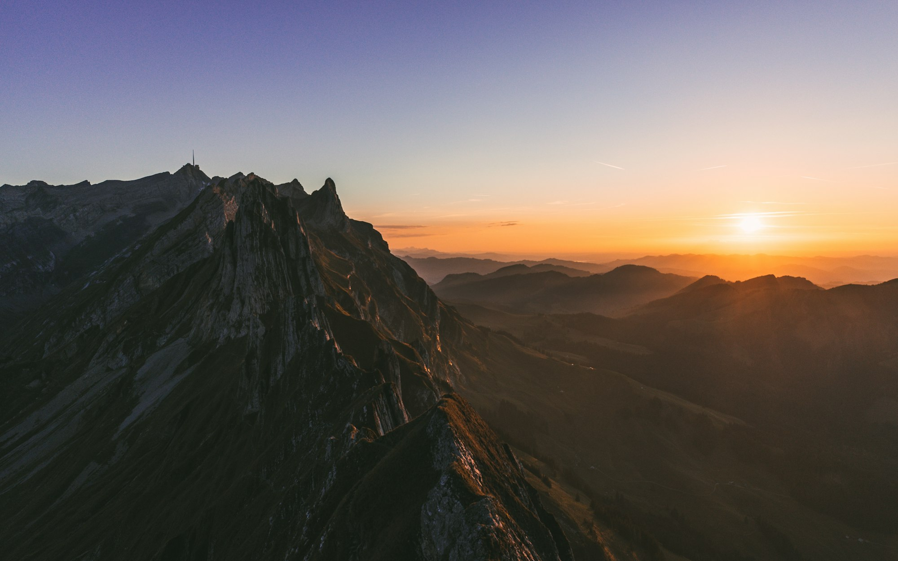
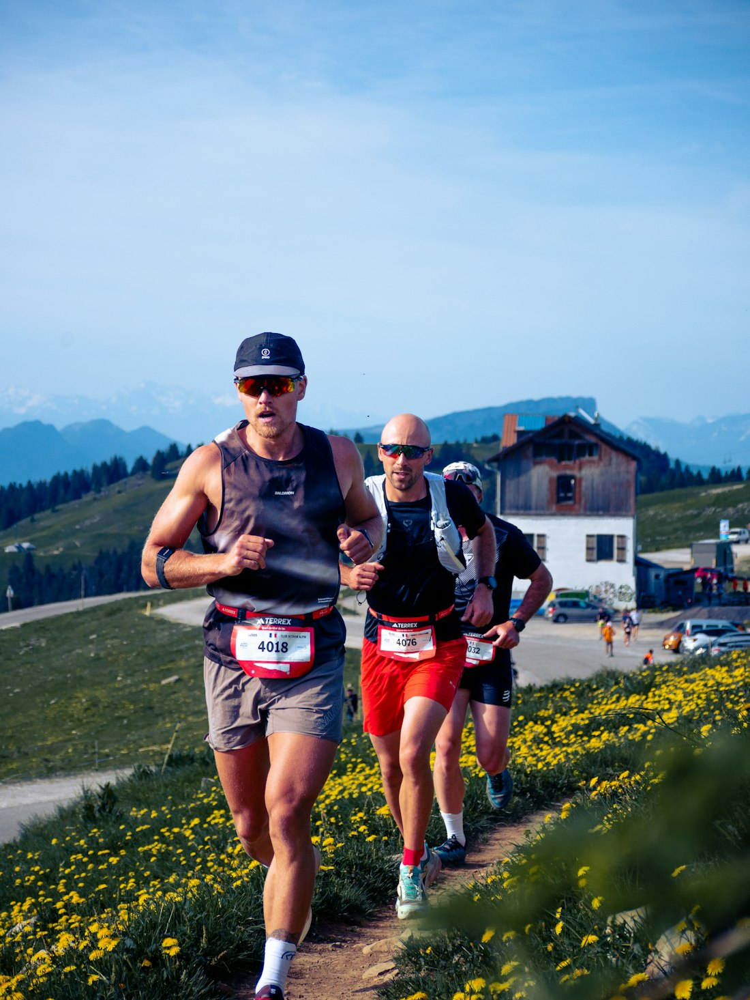
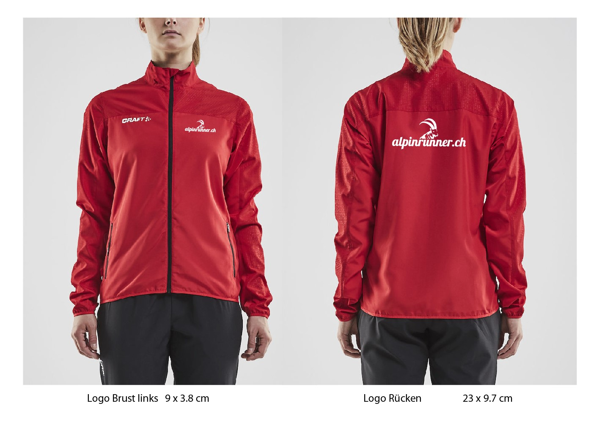
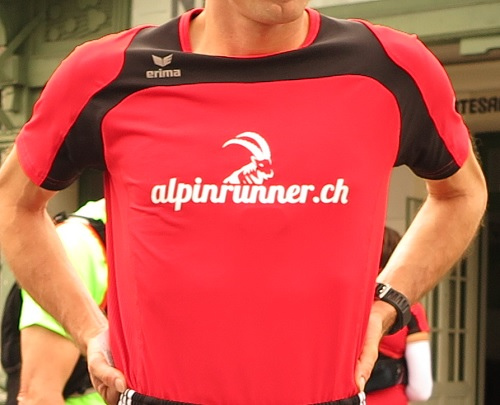

Erima T-Shirt
Neue Erima T-Shirt's mit dem neuen Alpinrunner Logo. Ab sofort verfügbar und bei Marco erhältlich.
Zum MarktplatzWir beschreiben Laufstrecken. Von Tal zu Tal, immer auf Wanderwegen.
Nächster Termin · 1. Nov Lauftraining mit Michi und Dani → Details




Wir beschreiben Laufstrecken in Graubünden.
Manchmal mit mehr als 1500 hm.
Teilweise alpin, immer auf Wanderwegen.
Wir passen das Tempo dem Gelände an.


Seit 2004 beschreiben wir Laufstrecken in Graubünden. Jeweils an den Wochenenden erkunden wir neue Strecken, manchmal mit mehr als 20 Km und 1500 hm. Teilweise laufen wir in alpinem Gelände jedoch immer auf Wanderwegen. Oft laufen wir von einem Tal ins nächste Tal, oder suchen einen schönen Höhenweg mit tollen Aussichten. Das Tempo passen wir dem Gelände an und geniessen dabei die schöne Landschaft. Wir haben auch Zeit um Pausen einzulegen.
Läufer/innen mit guter Ausdauer sind herzlich Eingeladen mit uns mit zu laufen.
Unsere Alpinrunner-Freunde begleiten uns oft auf Erlebnistouren und Anlässen.
Jeden Mittwoch Lauftreff ohne Voranmeldung. Kostenlos. Treffpunkt 19.00 Uhr bein Waldhausstall.
Eine Stunde Dauerlauf in 3 Gruppen mit Brigitte, Marco, Lädi, Iris, Orlando, Peter.

Neue Erima T-Shirt's mit dem neuen Alpinrunner Logo. Ab sofort verfügbar und bei Marco erhältlich.
Zum Marktplatz
Leichte Windjacke mit effizientem Feuchtigkeitstransport, in allen Grössen erhältlich zum super-Preis Fr. 100.-
Zum Marktplatz
Alpinrunner Langarm Shirt mit Alpinrunner-Logo erhältlich. Profitiert von diesem Angebot und bestellt euch gleich dieses Langarmshirt mit dem super Preis-Leistungsverhältnis, bei Marco erhältlich. Anprobe und erhältlich bei Marco.
Zum ShopLaufspezialisten Bieler Sport in Bonaduz für alle Alpinrunner-Freunde: 20% Direktrabatt auf alle Bruttoartikel (Running, Bike und Nordic), inkl. Sportnahrung und Sportuhren, Velos auf Anfrage.
Spezialangebot Hammer Produkte: 30 % Rabatt auf Hammer Nutrition Produkte. Alle Mitglieder des Vereins können sie bestellen oder vor Ort bei Sportbenzin, Lösli 1 in Schiers (Anmeldung erwünscht) beziehen. Informationen-Hammer Katalog · zum Angebot
Jeden Mittwoch Lauftreff. Alle Termine und Berichte sind in der Agenda zu finden.